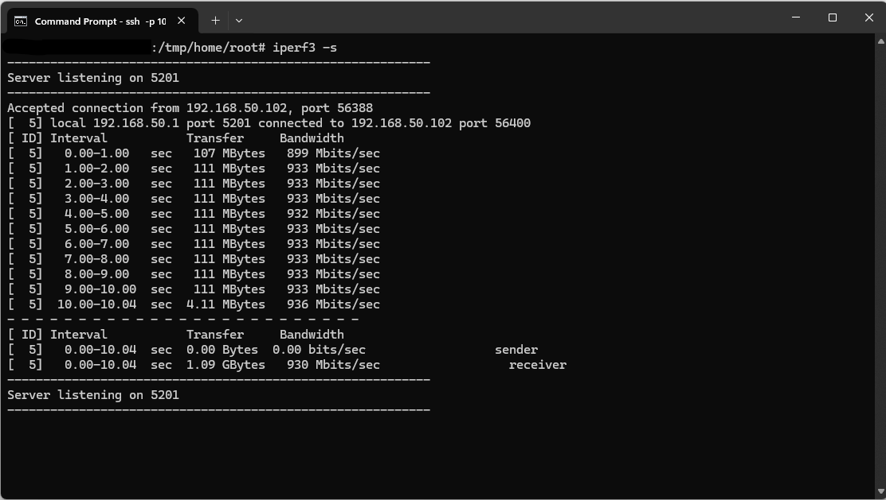

This project involved conducting network capacity testing to evaluate the performance capabilities of various network endpoints within my home infrastructure. The primary objective was to verify that network hardware was operating at optimal capacity and identify any potential bottlenecks or performance issues.
iperf3 is a free network testing utility for measuring maximum TCP and UDP bandwidth performance available at iperf.fr
iperf3 works on a client-server model. We will run two instances of the software, one at each endpoint.
Router Configuration: Enabled SSH access through the ASUS router firmware interface (Asus Router Firmware > Administration > System Tab > Service Section > Enable SSH (only on LAN)) to allow remote command line access.
The test runs at the command line.
On my windows machine I opened two terminal windows. In the first one, I connected via ssh to my home router. I then set the iperf3 program to listen in server mode. In the second terminal window, I set iperf to connect with the available server on the router.
The syntax is:
iperf3 -s (to run in server mode)
iperf3 -c <your server ip address> (to run in client mode)As is shown here, both the nic in the desktop pc and the router port support 2.5gb
On my linux desktop I set iperf to connect with the other instance of iperf listening on the router.
This desktop only has a 1gb network card, so its capacity is limited by that.
2.33 Gbits/sec / 2.5 Gbits/sec = 93% of hardware specified maximum
930 Mbits/sec / 1000 Mbits/sec = 93% of hardware specified maximumThe bandwidth achieved through the test was close to the anticipated maximum. In the real physical world there will always be slight deviations. These levels would be within acceptable tolerances.
Cat6a cable allows 10 Gbps (Gigabits per second) up to 100 meters. The cable lengths here is about 10 meters, so cable length should not be a factor in these tests. Variations may be due to the quality of the ethernet cable. I can digress about my efforts to source the best cat6a cable, but I did sacrifice some quality in the name of affordability.
I watched the CPU utilization of the router while the test was performing, all four cores bounced between 30-70% during the test. I don’t anticipate this hindered performance of the bandwidth capacity in this case.
Windows Desktop & Router Link:
Linux Desktop & Router Link:
Network performance testing was conducted within a controlled home environment.
This can serve as a method to document baseline performance metrics for future comparative analysis.
That’s it!